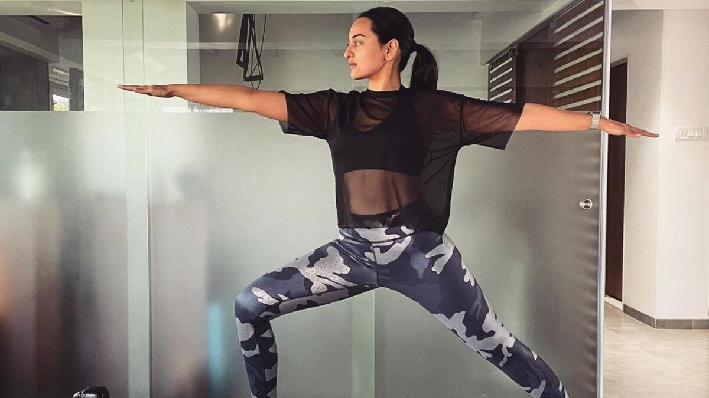

Category 1 Explore more
Fitness & Diet Tips By Jacqueline Fernandez
September 10, 2022We have dedicated this piece to Jacqueline Fernandez‘s intricate health regime. Check out 7 fitness and diet tips sourced from THIS report, all taken by our Leo baby’s everyday routine!
Sonakshi Sinha’s Weight Loss Journey: Fitness Routine And Diet Plan
September 9, 2022Want to know How Sonakshi Sinha reduced weight from 90Kgs to 60Kgs? Sonakshi sinha weight loss journey is indeed inspirational! Starring in the limelight of

Aamir Khan’s Fitness Regime & Diet:
September 8, 2022Aamir Khan’s fitness routine and his diet can be an inspiration for all the youngsters who are either trying to gain muscle mass or are

Milind Soman Reveals His Daily Exercises Are For Just 15-20 Mins
September 7, 2022Milind Soman revealed that people are often surprised when about his daily exercises being for just 15-20 minutes. He shared his workout routine too. Milind